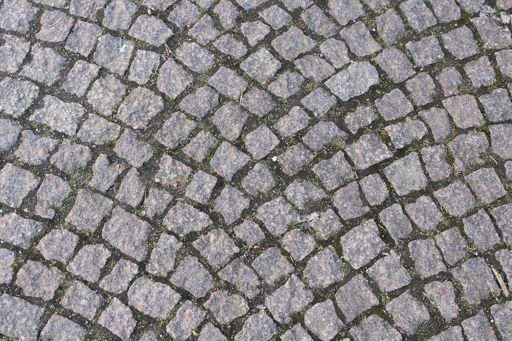
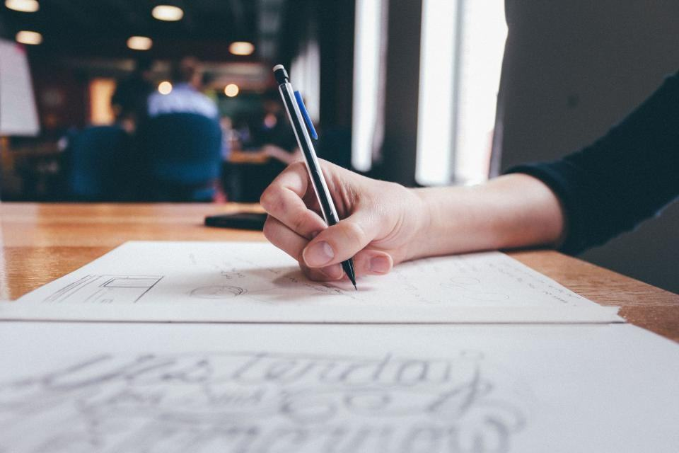
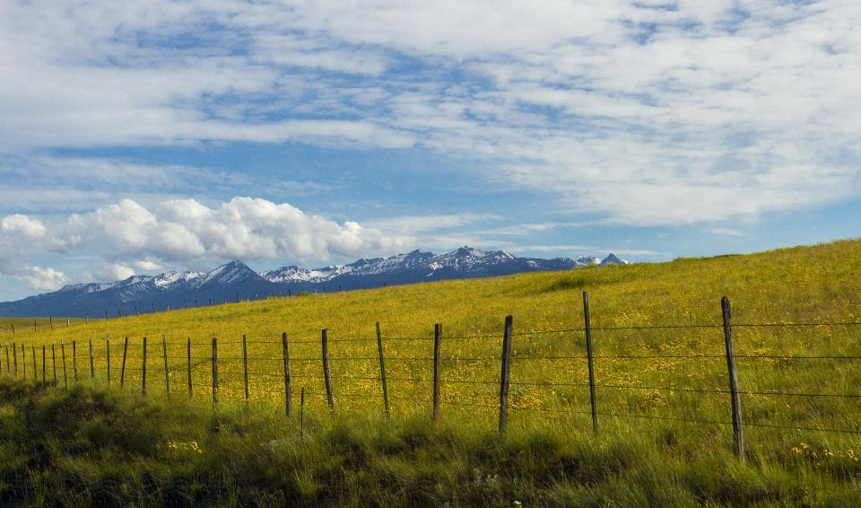
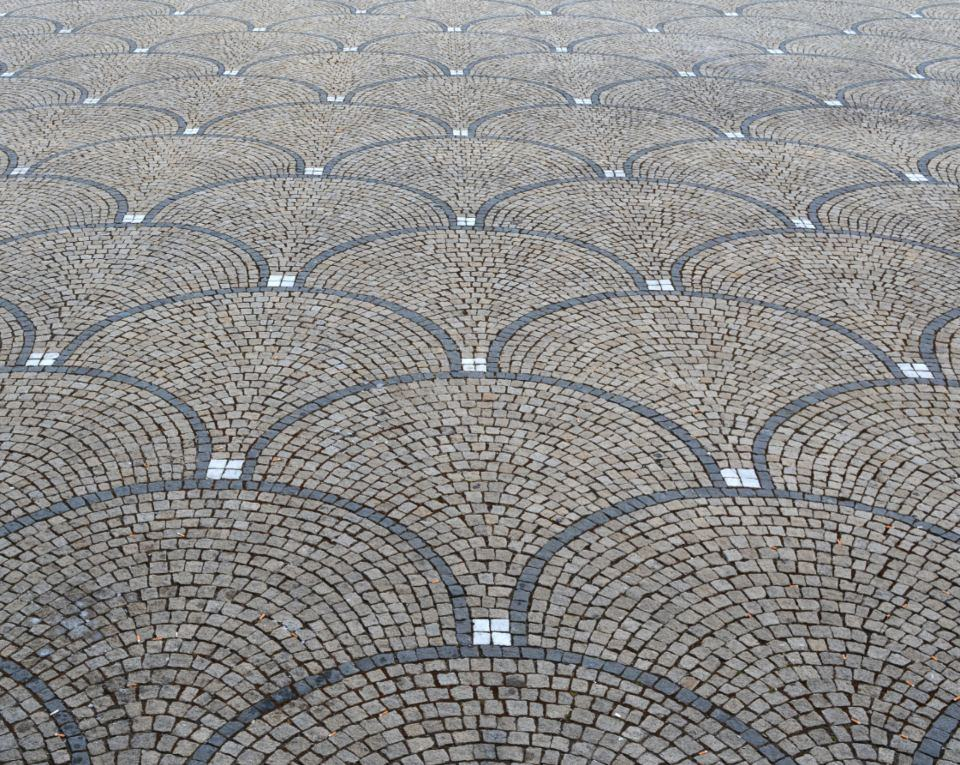
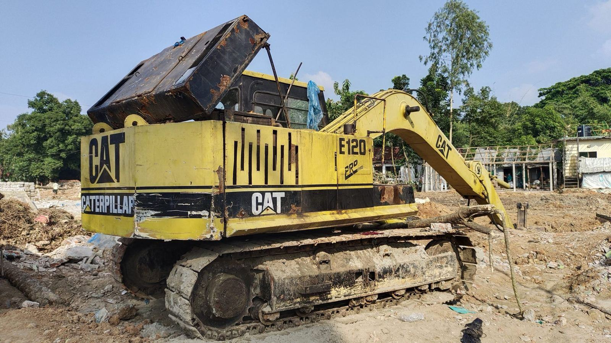
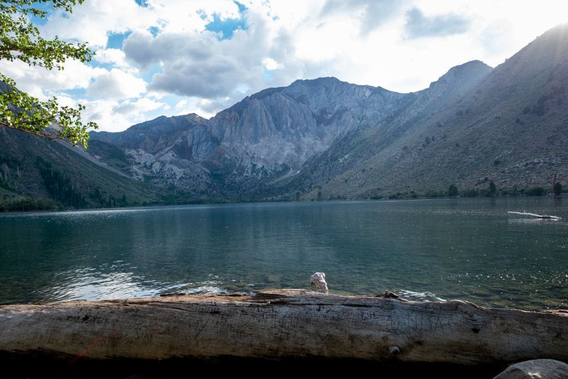
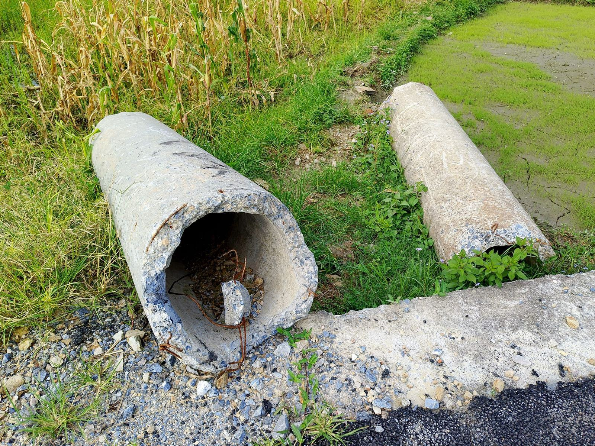
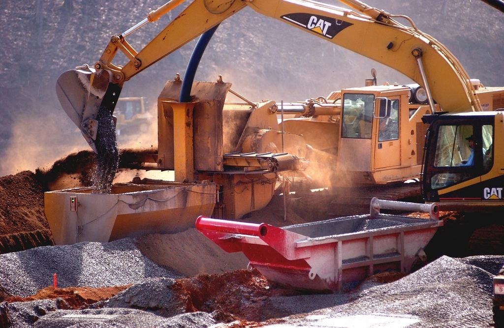

Grävt med el, byggt för regnet
Grön Linje är en markentreprenör i Lund med nio eldrivna maskiner. Vi bygger regnbäddar, skolgårdar och gator åt kommuner och fastighetsägare i sydvästra Skåne.

Mätbart lägre utsläpp sedan 2015
- 81 %Av massorna återbrukade 2025
- −58 %CO₂Per maskintimme jämfört med 2019
- 34anställdaI Lund och Malmö
Vad ska marken klara?
- 01
Dagvatten och LOD
Regnbäddar, svackdiken och makadammagasin som fördröjer vattnet på tomten.
Läs mer - 02
Skolgårdar
Lekytor, odlingslådor och träddungar med genomsläpplig beläggning.
Läs mer - 03
Gröna gårdar
Bostadsgårdar med ängsmark, skelettjord för träd och plattor som släpper igenom vatten.
Läs mer - 04
Masshantering
Sortering, provtagning och återbruk av schaktmassor i eget mellanlager.
Läs mer - 05
Eldrivna maskiner
Nio batteridrivna maskiner för tysta jobb i stadsmiljö och vid skolor.
Läs mer - 06
Gator och torg
Lokalgator, gångstråk och torgytor i natursten och betong.
Läs mer - 07
Klimatbokslut
Redovisning av koldioxid per projekt, timme och kubikmeter.
Läs mer - 08
Begär anbud
Vi räknar på kommunala och privata förfrågningar.
Läs mer
Tre platser inom fem mil
Vi arbetar nära för att hålla transporterna korta.

Lund
Huvudkontor och laddstation på Gastelyckan.

Gunnesbo
Malmö
Arbetsplatskontor för gårdar och skolor.
Senaste från Grön Linje

Klimatbokslut för 2025 publicerat
Utsläppen per maskintimme minskade med 18 procent på ett år.
Läs mer
Skyfallsparken i Lomma påbörjad
Parken ska kunna ta emot 4 000 kubikmeter regnvatten när den är klar 2027.
Läs mer
Så fungerar en regnbädd
Leila Nasser förklarar uppbyggnaden lager för lager – från makadam till perenner.
Läs mer
Ytor som tar hand om vattnet


Lunds kommun, tekniska förvaltningen
UppdragsgivareBrunnshög Exploatering

Staffanstorps skolfastigheter
BostadsrättsföreningBrf Möllevångsgården

Lomma kommun
Offentlig sektorKävlinge kommun

Bostadsstiftelsen Öresundsgården
FastighetsägareUniversitetsfastigheter Syd
- Jobba hos oss
Kör framtidens maskiner i dag
Vi söker anläggare och maskinförare som vill arbeta med eldrivna maskiner och växter lika mycket som med rör och grus. Vi erbjuder utbildning i dagvattenteknik och växtbäddar.
- Illustrationsbild

- LundMaskinförare eldrivna maskiner
- MalmöAnläggare med växtkunskap
- LundArbetsledare dagvatten
Alla anställda cyklar gratis på företagets elcyklar, och varje höst planterar vi ett träd per nyanställd på massterminalen.
- 3lediga tjänster just nu
Beställare och boende
Vi fick ett klimatbokslut med faktiska siffror, inte uppskattningar. Det kunde vi använda direkt i vår hållbarhetsredovisning.
Johanna R.LundElva veckor med grävmaskiner på skolgården och inte ett enda klagomål från lärarna. Det trodde jag inte var möjligt.
Ali K.StaffanstorpFöreningens gamla asfaltgård är nu det ställe där alla barn i huset leker. De krossade asfalten och använde den under plattorna.
Birgitta L.Malmö